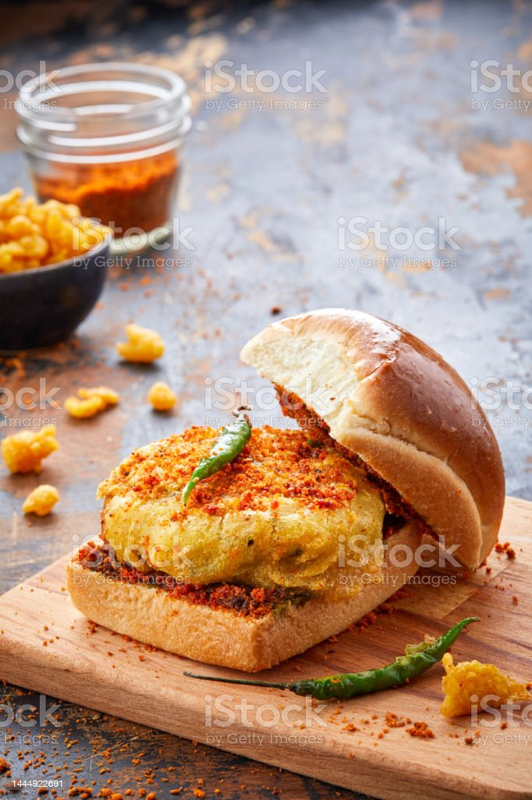
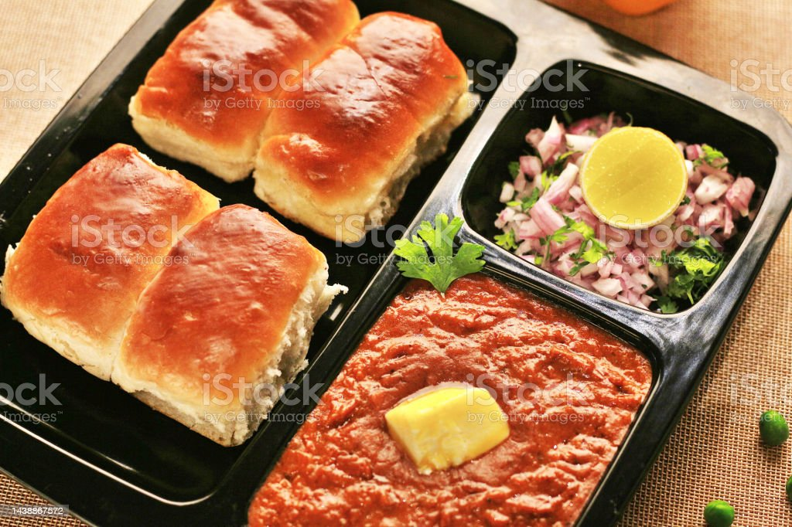

Pav Bhaji
What is Pav Bhaji
Pav bhaji is an iconic dish from Mumbai, which is also hugely popular as street food all over India.Just to give you the literal meaning: in Marathi, ‘pav’ means bread rolls and ‘bhaji’ refers to vegetables or a dry/gravy style mixed veggie dish. Since this particular combination has both these being served together, the dish is well-known under the sobriquet Pav Bhaji.

Ingredient List For Pav Bhaji Recipe
- Mixed Vegetables: I use vegetables like potatoes, capsicum, carrot, cauliflower, green peas. The street side versions do not have carrots and may also add less/no cauliflower. However, I add to make the bhaji more nutritious and homely.
- Green Peas: I mostly use fresh or frozen green peas, whereas dried green or white peas are used in the street side bhajis. These are cooked and mashed. This also results in a different taste and consistency of the bhaji. You can also make it with dried green peas.
- Pav Bhaji Masala: This dish will lose its essence if there is no pav bhaji masala in it. So, you can use a good branded readymade pav bhaji masala or use your homemade one.
- Butter: For the bhaji, my preference has always been the Indian brand of Amul butter. But you can even use any other trusted brand or homemade butter.
- Pav: You can either buy fluffy pavs from a noted bakery or make a batch at home. Whenever I decide to make Pav Bhaji or Misal Pav, I usually make the Pav a day before. To make it healthier, you can choose to make wheat dinner rolls.
How to make Pav Bhaji
Cook Vegetables
1. Rinse, peel and chop the veggies. You will need 1 cup chopped cauliflower, 1 cup chopped carrot, 3 medium
sized potatoes (chopped) and ⅓ cup chopped french beans.
Note: You can also add veggies that you like, but do not add okra, eggplants, pumpkin, radish, corn, yam or
green leafy vegetables.
2. Add all the above chopped veggies in a 3 litre stovetop pressure cooker. Also add 1 cup green peas (fresh
or frozen).
I have cooked the veggies in a pressure cooker. You can boil or steam them using a pan or in the Instant pot
adding water as needed.
3. Add 2.25 to 2.5 cups water.
4. Pressure cook the veggies for 5 to 6 whistles or for about 12 minutes on medium heat.
5. When the pressure settles down on its own, open the cooker and check if the veggies are fork tender,
softened and cooked well.
You can even steam or cook the veggies in a pan or pot. The vegetables have be to cooked completely and
should not be al dente or just about cooked.
Set aside the vegetables with the cooked water (broth/stock) in the cooker itself.
6. Heat a frying pan or kadai (wok). You can also use a large tawa or a skillet. Add 2 to 3 tablespoons butter. You can use amul butter or any brand of butter. The butter can be salted or unsalted.
7. Let the butter melt.
8. As soon as the butter melts, add 1 teaspoon cumin seeds.
9. Let the cumin seeds crackle and change their color.
10. Then add ½ cup chopped onions.
11. Mix onions with the butter and sauté on a low to medium heat.
12. Sauté until the onions turn translucent.
13. Add 2 teaspoons ginger-garlic paste. You can crush 1.5 inch ginger and 5 to 6 medium garlic cloves, in a mortar-pestle.
14. Mix and sauté for some seconds until the raw aroma of both ginger and garlic goes away.
15. Then add 1 to 2 green chilies (chopped), about 1 teaspoon chopped green chillies.
16. Mix well.
17. Add 2 cups finely chopped tomatoes. Swap canned tomatoes if you do not have fresh tomatoes.
16. Mix well.
19. Then begin to sauté tomatoes on a low to medium heat. making Mumbai pav bhaji recipe
20. Sauté until the tomatoes become soft, mushy and you see butter releasing from the sides. This takes about 6 to 7 minutes on a low to medium heat. Tip: If the tomatoes start sticking to the pan, then sprinkle some water. Mix well and deglaze the pan. making Mumbai pav bhaji recipe
21. When the tomatoes have softened, add ½ cup finely chopped capsicum (green bell pepper). Sauté for 2 to 3 minutes. Tip: If the mixture starts sticking to the pan, then add some splashes of water. You don’t need to cook the capsicum until very soft. A little crunch is fine in the capsicum. making pav bhaji recipe
22. Add 1 teaspoon turmeric powder and 1 teaspoon Kashmiri red chilli powder.
Make Bhaji
23. Add 2 to 3 tablespoons Pav bhaji Masala Powder. Depending on how instense is the aroma and flavor of pav
bhaji masala, you can add it in less or more proportions.
Add 2 tablespoons if the pav bhaji masala is strong, intense and flavorful. For a more robust and spiced
bhaji add 3 tablespoons of it.
24. Mix very well.
25. Add the cooked veggies. You can choose to mash the veggies before you add them in the pan or skillet.
26. Mix thoroughly.
27. Add all of the stock or water from the pressure cooker in which the veggies were cooked.
28. Combine and mix thoroughly.
29. Season with salt according to your taste preferences and give a mix.
30. With a potato masher, begin to carefully mash the veggies directly in the pan.
31. You can mash the veggies less or more according to the consistency you want in the bhaji.
For a smooth mixture mash more. For a chunky bhaji, mash less. Add more water if the bhaji looks thick.
32. Keep on stirring occasionally and let the mashed vegetable gravy simmer for 8 to 10 minutes on a low heat.
33. If the bhaji looks dry and then add some water. The consistency is neither very thick nor thin.
34. Do stir often so that the bhaji does not stick to the pan. When the bhaji simmers to the desired
consistency, check the taste.
Add salt, pav bhaji masala, red chili powder or butter if needed.

Pan Fry Pav
35. When the bhaji is simmering, you can pan fry the bread rolls so that you serve the pav with steaming hot bhaji. Cut through the bread roll from the center so that you get two equal halves.
36. Heat a tawa or skillet or a shallow frying pan. Keep the heat to a low and then add 1 to 2 tablespoons butter or more if you like.
37. When the butter begins to melt, add 1 teaspoon of pav bhaji masala (for 2 to 3 pav). You can skip pav bhaji masala if you prefer.
38. Mix the pav bhaji masala very well with a spoon or spatula.
39. Then place the pav on the butter.
40. Press with a spatula and rotate the pav all over the melted butter so that the pav absorbs the butter together with the ground spices.
41. Now turn over the pav. Press gently with a spatula and rotate them on the tawa so that the second side
absorbs the butter.
Add more butter if needed. You can turn over and toast them more if required. Then transfer the lightly pan
fried bread rolls in a plate and set aside. This way fry the rolls in two to three batches.
42. Serve piping hot Bhaji topped with a bit of butter paired with the lightly toasted pav and a side of finely chopped onions, coriander leaves and lemon wedges.
